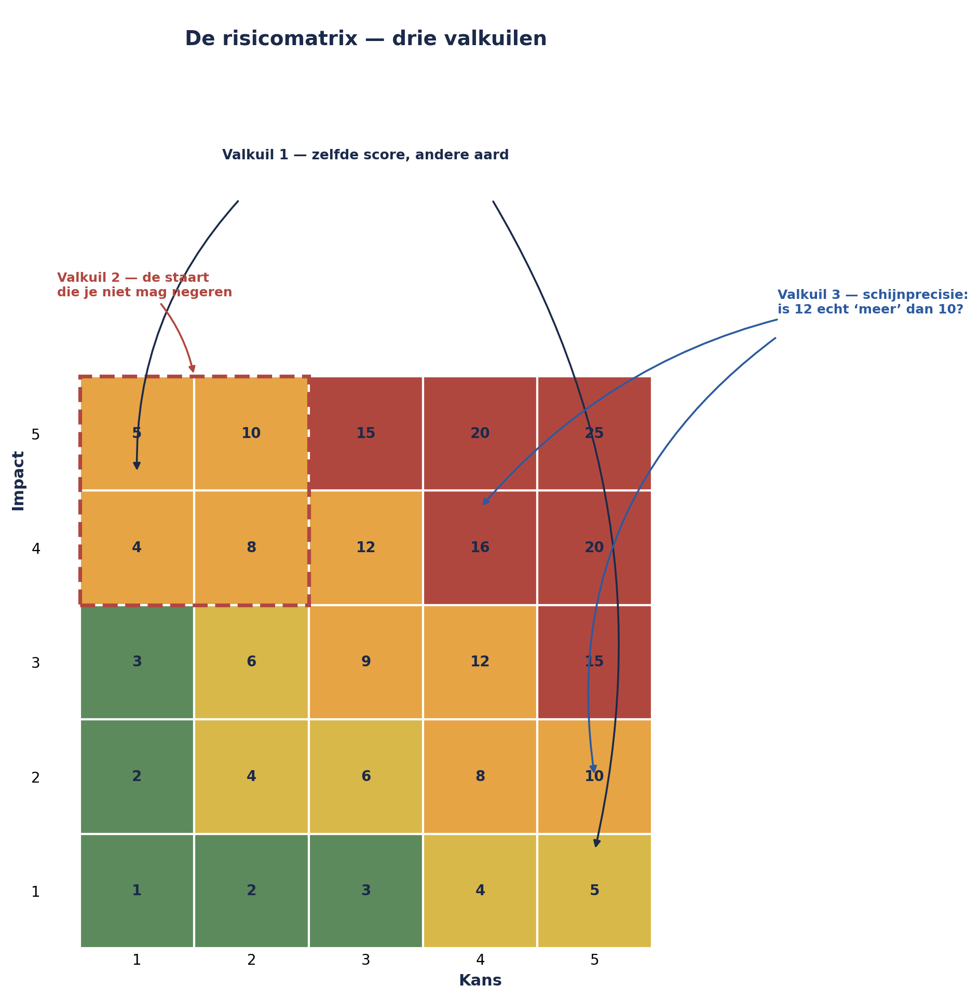

Deel 5 — Kwalitatieve analyse, en de matrix die je mag wantrouwen
Niveau 1 — Fundament · Slidedeck (28 slides)
Slide 1 — Titel
Risicomanagement Deel 5 — Kwalitatieve analyse, en de matrix die je mag wantrouwen
Niveau 1: Fundament
Slide 2 — Terugblik
19 volwaardige risicozinnen. Uit vijf technieken, gecombineerd.
Vandaag: hoe erg, en hoe waarschijnlijk?
Slide 3 — Sanne scoort
Kans × impact. Groen, geel, rood.
Ziet er professioneel uit.
Slide 4 — En toch
Minstens drie stille denkfouten.
Dezelfde die regel 11 veertien maanden lang onopgemerkt lieten.
Slide 5 — De vraag van dit deel
Hoe scoor je goed — en waarom mag je de uitkomst nooit voor waarheid aanzien?
Slide 6 — Twee regels om te scoren
Nooit alleen. Impact vóór kans.
Slide 7 — Waarom impact eerst?
“Het gebeurt toch bijna nooit…”
…kleurt onbewust: “…dus zo erg zal het niet zijn.”
Slide 8 — Kans en impact zijn onafhankelijk
De ene vraag mag de andere niet kleuren.
Slide 9 — Opdracht 5.1
Bedenk een voorbeeld waarin eerst-kans-scoren de impact vertekent.
Slide 10 — De matrix
Het meest gebruikte instrument in het vak.
En het meest bekritiseerde.
Slide 11 — Valkuil 1
Ordinale schalen vermenigvuldigen.
Kans 5 × impact 1 = 5 Kans 1 × impact 5 = 5
Zelfde score. Compleet andere risico’s.
Slide 12 — Wat je hiermee doet
Gebruik de score als sorteerhulpmiddel, niet als absolute maat.
Slide 13 — Valkuil 2
De heatmap verbergt de staart.
Lage kans + hoge impact → vaak oranje, niet rood.
Slide 14 — Precies het gevaarlijkste hoekje
De risico’s die een organisatie kunnen laten omvallen.
Slide 15 — Kernzin 3
Een lage kans is geen reden om een hoge impact te negeren — het is een reden om extra goed naar de impact te kijken.
Slide 16 — Valkuil 3
Schijnprecisie.
Score 12 versus score 10 — is dat verschil echt?
Slide 17 — Wat je hiermee doet
Gebruik brede banden: laag / midden / hoog.
Binnen een band: geen betekenisvolle volgorde.
Slide 18 — Figuur 5-1

Slide 19 — Opdracht 5.2 — 15 minuten
Drie scenario’s. Welke valkuil speelt er telkens?
Slide 20 — Inherent versus residueel
Inherent — vóór maatregelen Residueel — ná bestaande maatregelen
Slide 21 — Vaste volgorde
Eerst inherent scoren. Dan maatregelen benoemen. Dan pas residueel scoren.
Slide 22 — Het verschil is zelf informatie
Groot verschil → zware leunend op één maatregel.
Werkt die maatregel eigenlijk wel?
(uitgewerkt in deel 16)
Slide 23 — Opdracht 5.3 — individueel, 20 minuten
Scoor één eigen risico: inherent én residueel.
Slide 24 — Verankering
De eerste hardop genoemde score kleurt de rest.
Bij WGP 2.0: de projectmanager altijd als eerste.
Slide 25 — Tegenmaatregel
Eerst individueel en schriftelijk scoren. Pas daarna bespreken — vooral de verschillen.
Slide 26 — Opdracht 5.4 — tweetallen, 15 minuten
Ontwerp een werkwijze die verankering voorkomt.
Slide 27 — Sanne’s twee opvallende risico’s
Sleutelkennis: kans 3, impact 4. Wetgeving: kans 2, impact 5.
Niet de hoogste score. Wel de meeste aandacht nodig.
Slide 28 — Voor deel 6
Meenemen: eigen drie risico’s, nu gescoord
Deel 6: wat doe je ermee? Vijf strategieën voor bedreigingen, vier voor kansen.